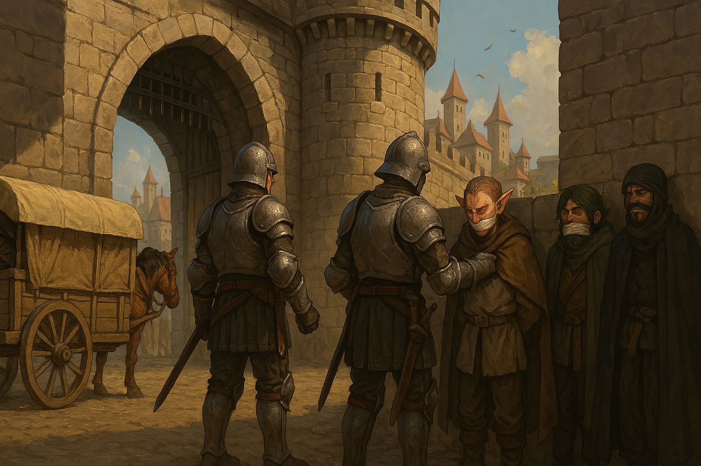

Chapter 1: Welcome to Macksohm
The Blooming of Macksohn

The Blooming of Macksohn
15048.11.07
在 Jiaheng 於 Korringfield 被士兵帶走，Lemmy 前去搜集資訊後，台北市議員們上了 Paladin 的父親，Magnus 爵士準備的馬車，朝著麥丁頓王國的首都麥克嵩前進。
路途中，Usioni 帶著 King Knicol 因私人因素下了馬車，與其他夥伴暫時的告別。剩下的一夥人花了大約一個月的時間，終於抵達了麥克嵩的城門口。
城外的衛兵將馬車攔了下來，詢問冒險者們的身份。Paladin 下了車，表示自己是前侍衛隊副隊長 Magnus 爵士的兒子，卻被衛兵告知 Magnus 爵士在這裡已經沒有影響力了。情急之下，Paladin 供出了「麥克嵩的紫羅蘭」，也就是他的親生母親之名。衛兵們討論後，帶著 Paladin 先進城，並把他帶到城門口的一間小木屋，等待紫羅蘭本人到來詢問。
Paladin 外的眾人被帶下了車，而且也被認出是「沃瓦倫的惡魔」。衛兵們將大家壓在城牆邊，綁起他們的手腳和口部，也拿走了他們的武器和錢財，不准他們入城。
冒險者們試著用千方百計想要進到城內。首先，Ron 喊著自己是來自尖頂寺的武僧，一位衛兵表示自己是在尖頂寺附近的城鎮出生，肯定尖頂寺出來的僧侶都很可靠，於是他便帶著 Ron 進城了。Samael 用他的魯特琴彈奏了一曲，訴說了自己在沃瓦倫發生的故事，試圖洗刷台北市議員的臭名，讓衛兵們聽了津津有味，也成功讓他進了城內。最後，剩下 Midori 和 YHWH 兩人還在城外。一位衛兵在 Midori 耳邊竊竊私語，想和他談條件，交換讓 Midori 入城，但 Midori 不願答應。最後 YHWH 利用他的 Bag of Holding 表演了殺死馬的把戲，成功取悅了衛兵。衛兵們希望能留下 Bag of Holding，就放他們入城，但 YHWH 不願放手。最後，一名衛兵和 YHWH 與 Midori 談了一個新的交易：他秀出了手上的一個符號—一個有十道光芒射出的太陽符號，並要兩人在城內協助手上有這個符號的人完成一件任務，任務的內容不會讓他們被逮捕，也不會要他們殺人。兩人同意後，便成功入了城。
麥克嵩的紫羅蘭，Xandria 本人在衛兵的帶領下進到了 Paladin 所在的小木屋，開始了談判。Paladin 請衛兵將駕馬車帶他們來到麥克嵩的馬伕帶了進來，請他代為說明。不過最後因為 Paladin 與馬伕沒有足夠的證據說明 Paladin 是紫羅蘭的親生兒子，Xandria 便離開了。衛兵將 Paladin 綁在木屋內的椅子上，但是馬伕成功襲擊了衛兵。兩人將衛兵喬裝為馬伕，綁在椅子上，便將門關上。馬伕自己換上了衛兵的裝扮，假裝押解 Paladin 走在城內。馬伕表示自己名叫 John，不過 Paladin 執意要叫他 Cena。
入城的 Ron 在衛兵的帶領下，來到了城內的一間酒館，Sunrise。他分享了自己在沃瓦倫要到的食譜，煎了牛排，意外的熱賣。
Samael 入城後，在廣場一處坐了下來，便開始彈琴，賺了點外快。
Paladin 和 Samael 都在廣場見到了一個他們熟悉的身影—Lemmy。Lemmy 熱情的招呼兩人，並將兩人也帶到了 Sunrise。Samael 在 Sunrise 內彈唱，也轉了一點外快。Paladin 借了自己的魅力頭帶給 Cena，武器也都放在 Cena 身上。
YHWH 和 Midori 兩人入城後，戴上了 YHWH 在 Korringfield 買的面具，試圖遮掩自己通緝犯的身份。兩人意外聽見了城門旁的小木屋內傳出了聲音。在思索許久後，兩人打開了小木屋的門，成功營救出了被換上了馬伕裝的衛兵。衛兵答應了他們的請求，擔任他們在城內的嚮導，作為兩人拯救他的酬勞。衛兵自稱名叫 Kahn，是麥克嵩的當地人。他說明要先帶兩人去他家一趟，讓他換個衣服拿些東西。來到了 Sunrise 門口，Kahn 表示自己住在這裡的二樓，於是推開了門。
Sunrise 的門被推開，Paladin 見到那個在小木屋內他與 Cena 襲擊的衛兵，也就是 YHWH 和 Midori 所認識的 Kahn，便偷襲了他，卻失敗了。Lemmy 見狀便跑到了門口，劃破了 Kahn 的喉嚨。Kahn 的身體向 Lemmy 倒去，吸引了大家的注意。Lemmy 只好表示這名男子意外昏了過去，結果 Sunrise 內竟然有醫生。醫生趕了過去，發現了 Kahn 已經死了，便大喊了一聲「殺人啦」。
酒館內一陣大亂鬥，冒險者們也分別進行著不同的行為：Paladin 和 Cena 在店中間抵擋圍過來的酒客、Lemmy 威脅醫生不要搞事、YHWH 先到門外擋著、Midori 試著扮演白臉制裁 Lemmy、Samael 彈著琴置身事外，而正吃著自己煎的牛排的 Ron 在意外和同時兼任主廚的老闆起衝突後，悠悠的到廚房內準備繼續煎牛排。在主廚和幾名酒客昏倒後，戰鬥暫時告了一段落。
Lemmy 等人將昏倒的老闆與酒客抬到了廚房內的休息室，也將已經死去的 Kahn 塞到了 Bag of Holding 內。他們檢查了 Kahn，發現他的手上也刺有十道光芒的太陽。Lemmy 和 YHWH 試圖尋找 Kahn 提到的 Sunrise 二樓，卻無法在店內外找到任何能進入的方法，甚至懷疑會不會根本就沒有二樓。Paladin 發現帶著自己武器與頭帶的 Cena 竟然不見了。另外，Lemmy 也打聽到了大約在一週後，城內將舉辦一場比賽，比賽的內容似乎是單純的比武錦標賽，獎金十分豐厚。
在大家處理完各種亂象後，Ron 以外的所有人決定離開酒館，而 Ron 決定將酒館先當成他的基地。他向老闆詢問為何當時攻擊了他，老闆表示自己年幼時曾被龍人欺凌，因此對龍人懷有很嚴重的不安感，所以當下才攻擊 Ron。為了表示自己的歉意，老闆同意讓 Ron 在 Sunrise 擔任廚師，同時使用休息室作為他工作期間的住處。
Lemmy 帶著大家來到了麥克嵩的藝文特區。其中一處吸引了他們的注意力，是一個潔白寬敞的雙開大門，上方刻了「崔尼斯劇院」的字樣，不過門外卻沒有任何演出的公告。Lemmy 推開了門，帶著大家來到了劇院的大廳。眾人買了票，進場看了每日下午 2 點到 4 點都會演出的「崔尼斯簡史」。眾人對於崔尼斯王朝的認識有多有少，因此對劇的理解多寡不太一樣。演員謝幕後，Midori 向售票亭的服務人員要了節目演出表，發現演出劇中主角，Hollison Tuka，也就是崔尼斯王朝首任皇帝霍里森一世的演員叫 Moses Collison，而贊助本場演出的是個叫做「The Berners Family」的團體？組織？家族？Midori 並不清楚。一直沒有進入狀況的 Samael 抱怨著這齣劇，表示自己彈魯特琴還比較精彩。此時，一名中年男子拍了拍他的肩膀，表示自己是個星探，如果 Samael 有興趣，可以擔任他的經紀人。他遞給了 Samael 一張名片，上面只有個音符的符號 🎵，不過 Samael 感受到了這張名片上有傳送術的魔法。男子表示，如果要找他，只要用大拇指在音符上連續點三下就可以了，說完便轉身離去。
Ron 在 Sunrise 的休息室內找到剛才昏迷的醫生，向他傳了話表示剛剛協助他逃離 Lemmy 魔爪的面具女士（Midori）希望明晚在 Sunrise 內再和他見面。醫生同意了。
Lemmy 帶著夥伴前往一家他所知道的便宜旅社，The Gates Inn。旅社在城市內較為窮困的區域，治安不好，但房間真的便宜。大家分了兩間雙人房以及一間單人房入住。
隨後，Lemmy 帶著 Samael 和 Paladin 回到藝文區，找了有較多街頭藝人演出的區域，讓 Samael 表演，賺點錢。他們也隨後到附近的樂器行，想幫 Lemmy 買一把自己的魯特琴，卻發現以現有的錢財只能買得起兒童版的琴。
Midori 和 YHWH 想去找附近的教堂，於是和旅店老闆打聽消息。老闆 Kevin Bolden 態度很不好，但是在兩人嘗試溝通後態度有所改善。老闆對城內盛行的宗教和麥克嵩的紫羅蘭都不太清楚，不過他表示他知道有個地方可以打聽各種八卦，便抄了個地址給 Midori。
兩人來到了指定的地址，破舊的房子內沒有燈光。小心翼翼地找到了房子地下室的樓梯口，漫步而下。空蕩的房間被一個像是魔法壁爐的裝置點亮，房間的另一側，一個披掛著斗篷的人低著頭靜坐著，手肘靠在桌上。Midori 和 YHWH 向那個人打了招呼，一個小女孩的聲音喚著他們倆要拿出「有價值的東西」才能換到情報。可以說是身無分文的兩人最終拿出了有拉索斯文字的匕首，才換得一點點消息，確認麥克嵩的紫羅蘭確實有個私生子。兩人發現，在對話的過程中，靠著桌子的斗篷人完全沒有移動，因此起了疑心。Midori 一把撞開桌子，發現披著斗篷的是個假人。小女孩也向兩人表示交易破裂了。兩人把桌子和假人復原後，YHWH 決定把感受到有魔法的斗篷帶走，放入了他的百寶袋內。走回了樓上，兩人對於剛剛所見所聞感到困惑，但也明白下一次，不能再是他們兩人過來了。而取走的魔法斗篷，也在兩人到附近雜貨店想賣出時消失了。
另一方面，Ron 在 Sunrise 和酒客們各方打聽，聽起來麥克嵩是個宗教多元的城市，沒有特別哪個宗教盛行。老闆也讓 Ron 隔天休假，可以探索一下城市。
稍晚，眾人回到了 Sunrise。Lemmy 和 Paladin 玩了麥克嵩盛行的紙牌遊戲—Lemmy 從小就有玩，但是卻一直不知道這遊戲的名字，只顧著叫它「打牌」。然而，幾輪下來，Lemmy 和 Paladin 輸了不少，把手上帶回來原本要送給 Midori 和 YHWH 的香腸輸掉了。
一位似乎認識 Lemmy 的男子示意他到了門外。自稱 Edmond 的男人遞給了 Lemmy 一個有機關的陶杯，也和他閒聊了一下。Lemmy 將陶杯收了起來，若無其事地回到了 Sunrise 內。
Lemmy 也藉機找了 Midori，亮出了他手上的太陽徽記，表示要求他讓整個團隊都參與下週的比武大會。相對的，他會幫 Midori 找回他被衛兵沒收的信物：津菈的護符。然而，Lemmy 在衛兵駐所花了不少功夫拿回來的 Midori 的背包內，卻是空無一物。